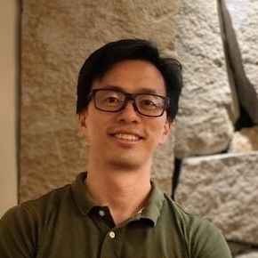
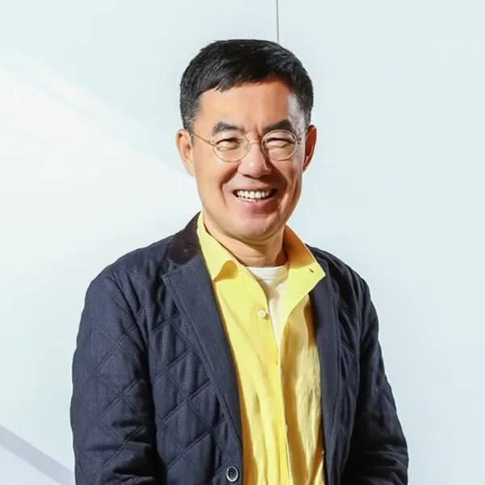

黃芳誼
東呉大学社会学部 准教授／AI社会研究センター長 ・ Fang-Yi Huang, Ph.D.
研究領域は医療社会学、社会政策、ジェンダー研究、高齢期の経済保障。制度が人の生涯——健康・労働・退職後——にどのような痕跡を残すかに長く関心を寄せてきました。近年はAIを社会学の教育・研究に取り込み、「犯罪学におけるAIの応用」と「AIと社会福祉の増進」を開講。犯罪予測・リスク評価から福祉テクノロジーまでを扱い、アルゴリズム時代の公正と正義を学生とともに考えています。
研究の実装としては、マイクロシミュレーションで台湾・日本・韓国の年金制度のジェンダー格差を分析し、その成果を一般公開の台日韓・年金給付シミュレーターと10分間のドキュメンタリー・アニメ『10分間のカウントダウン：誰の老後が制度に記憶されるのか』へと翻訳しました。研究を公共コミュニケーション作品に変える具体例です。現在、AIとジェンダーの国際比較を含む複数の国科会（NSTC）大学生研究プロジェクトを指導しています。
→ センター長の個人サイト：voyage213.github.io（紹介・研究・著作・教育）
メンバー
メンバー中心成員
メンバーはいずれも社会学部の教員で、科学技術社会論（STS）、社会学理論、ジェンダー研究、社会政策、犯罪学、ソーシャルデザインなどを専門とし、AI関連科目を自ら担当してセンターの教育・研究を支えています。
第3代センター長 2025– DIRECTOR
黃芳誼
社会学部 准教授／AI社会研究センター長
現センター長。「犯罪学におけるAIの応用」と全学横断科目「AIと社会福祉の増進」を担当し、講演シリーズ・高校生AIサマーキャンプ・国際共同研究を統括。詳しくは上記のセンター長紹介を参照。

第2代センター長 2022–2024
劉育成
社会学部 教授
第2代センター長（2022–2024）。国立政治大学 社会学博士。専門はAIと社会、エスノメソドロジー、システム理論、STS、ソーシャルデザインとデザイン思考。「AIと社会学」を担当し、「社会現象としての人工知能」や自動運転技術の社会研究に注力する、台湾社会学で最も早期からAIを体系的に研究した一人。2026年には主宰する国科会「チップ駆動人文」子プロジェクトで、実践大学 工業製品デザイン学科の宮保睿、キュレーターの陳湘汶と共同制作した学際作品『80之後』（After the Age of 80）が米国Core77デザイン賞 スペキュラティブデザイン部門を受賞し、同部門で本年度台湾唯一の受賞チームとなりました。
中心成員 MEMBER
張君玫
社会学部 教授
専門は社会学理論、STS、ジェンダー研究、ポストヒューマン思想で、サイボーグ・フェミニズムの理論と翻訳に長く取り組んできました。「AIとサイボーグ・フェミニズム」「エコロジカルな知とAI」を担当し、ジェンダー・生態・技術の交差点から、人間と機械の関係・身体・境界を学生とともに考えます。
中心成員 MEMBER
紀建良
社会学部 助教
「AI協働のソーシャルデザイン：AIはいかに社会を変えるか」を担当。ソーシャルデザインの手法とAI協働ツールを組み合わせ、AIが労働・教育・日常に与える影響を学生が理解し、現実の社会課題に応えるデザイン提案を実際に作り上げます。

中心成員 MEMBER
劉維公
社会学部 准教授
ドイツ・トリーア大学 社会学博士。台北市政府文化局長を務め、実践大学 工業製品デザイン研究所の准教授を兼任。専門はトレンド研究、イノベーション研究、文化社会学、消費社会学、ソーシャルデザインで、台湾における「ソーシャルデザイン」の主要な提唱者の一人——デザインは美や経済価値の創出にとどまらず、社会課題を解決する方法であるべきだと説きます。近年はこの革新とデザインの思考をAIへ持ち込み、生成AIが創造的な仕事とデザイン実践をどう書き換えるかを探究。センターの高校生AIキャンプでも自ら教壇に立ち、「高校生にもできる生成AI作品」で受講生を発想から制作まで導き、AIの創造力教育を高校世代へと広げています。
中心成員 MEMBER
周怡君
社会学部 教授
ドイツ・ハイデルベルク大学 社会学博士。台湾障害研究学会 理事。専門は比較社会政策、社会保険、EU社会政策、障害者福祉政策で、CRPD（障害者権利条約）の視点から台湾の障害者雇用促進・地域デイケア・福祉施設の政策を長く検証してきました。近年はAIと障害研究の交差領域に取り組んでいます——受給資格の評価、就労マッチング、ケアサービスにアルゴリズムとスマート技術が導入されるなか、AIが障害者の権利保障とサービスへのアクセスをどう再形成するかを問います。技術はエンパワメントの補助具にもなれば、新たな排除を再生産することもある。AI時代の制度設計はいかに「誰ひとり取り残さない」ものになりうるか——それが彼女がセンターにもたらす鍵となる問いです。
初代センター長 2020–2021
葉崇揚
社会学部 教授
専門は社会政策、福祉国家論、年金制度、東アジア福祉レジームの比較。デジタル化と人口高齢化が交わるなかで、社会保障制度が新たなリスク構造にどう応答するかに注目し、センターの「AIと社会政策」研究の要となるとともに、「東アジア社会未来ラボ」学部横断教員コミュニティを共同召集しています。
→ 個人サイト：chungyang1017.github.io